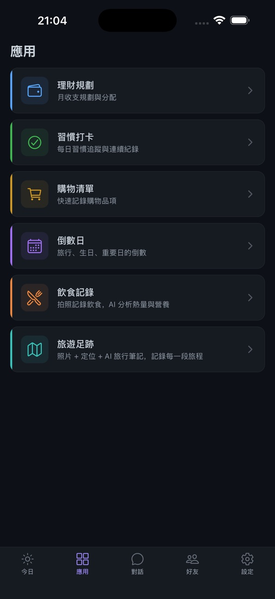

Xitto brings chat, a personal Today dashboard, friends with an AI secretary, life-tracking mini-apps and scheduled tasks together in one app on your phone.
From a quick question to planning a trip, Xitto handles the details so you can focus on living.
Talk to Xitto with the AI model you prefer. Get answers, draft messages and brainstorm, with personal memory so you never repeat yourself.
Stocks, weather, sports and news on one page. Pin the cards you care about, or just ask the AI to add one for you.
Message friends peer-to-peer over Nostr. Turn on AI secretary mode and Xitto suggests replies so nothing important slips by.
Snap a meal for nutrition analysis, track habits, plan your budget, keep a shopping list and log your travels.
Set recurring tasks and Xitto runs them at the right time, even in the background.
Conversations stay on your device. Xitto never uploads your personal data without your permission.
Open Xitto and your day is already laid out: the weather, your stocks, last night's match and the news you follow.
Lightweight apps built into Xitto, each with AI where it helps most.

Available now for iPhone (iOS 16.4 or later).
Xiza is a startup founded in Taiwan in 2025. We build Xitto, an AI assistant that fits into everyday life instead of adding to your cognitive load.
Have questions or partnership inquiries? Email us or reach out through our Line official account.
Founder / CTO
NTHU Computer Science. 10+ years of Java enterprise architecture and AI system integration across finance, retail, manufacturing, semiconductor, and new energy vehicle industries.